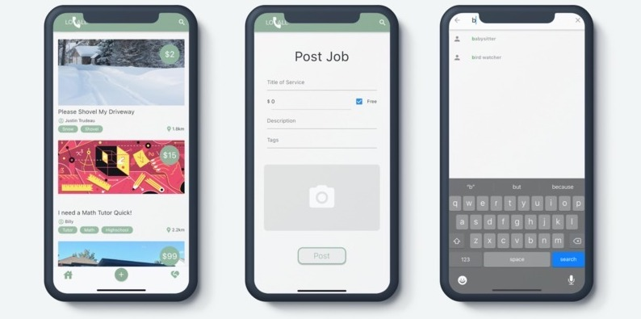
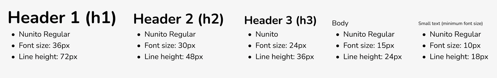
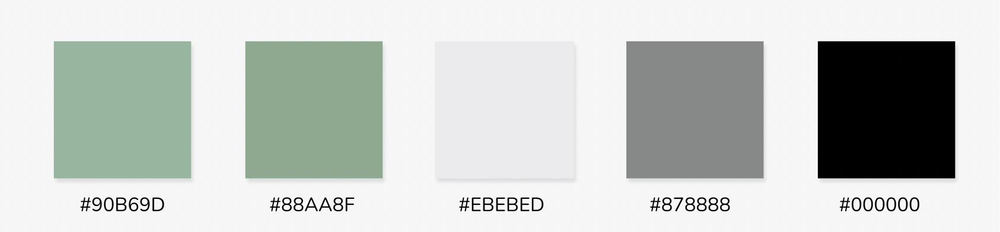
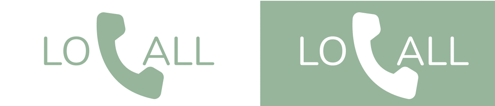

Purpose
Locall helps members of a neighbourhood get in contact and share any tasks that they may need help with. Users can browse through these tasks and offer to help their neighbours. Those who post the tasks can also choose to offer payment for these services. It's hard to trust just anyone to help you out with daily tasks, but you can always count on your neighbours.
Design System
The goal was to create a system which was highly accessible and usable for the wide ranges of users which may use this application. An assumed use case for this application, for example, could be an elderly individual requesting a snow-shovelling service from a young teen. The end result was a set of accessible and readable components and interfaces with a straightforward user flow. A few screenshots of the design are shown below.
Sample screens from the Locall application
Typography
During the planning phase we identified a set of requirements, that we wanted to define and guide the design: clean, modern and simple; and welcoming and friendly. For a clean and readable display, Nunito, a balanced sans-serif typeface with softer rounded edges was selected.
Primary Themes & Logo 
Primary identity colours and logo
Primary identity colours were selected to reflect the pleasant neutrality between neighbours. An unimposing and natural colour to maintain user’s attention. Green is often associated with growth and harmony, two traits accentuated by this application’s purpose.